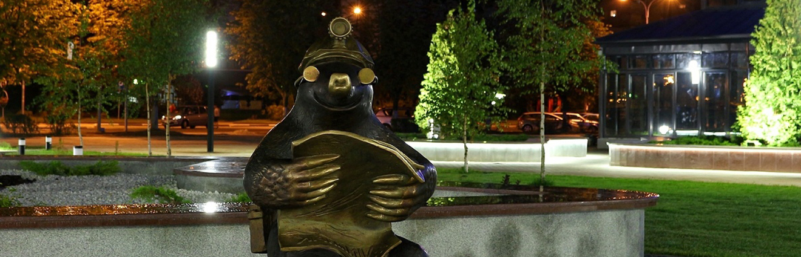

Достопримечательности

Памятник Владимиру Ильичу Ленину расположен рядом с центральной площадью города, на пересечении улиц Ленина и Козлова. Памятник В. И. Ленину выполнен в форме бюста установленного на монументе. Автор памятника известный советский скульптор А. О. Бембель. Памятник установлен в 1980 году лишь через 22 года после создания города.
Памятник в честь шахтёров-первопроходцев. Установлен в Солигорске 28 августа 1977 года. В центре монументального произведения, которое олицетворяет необычайную силу человека, подарившего земле камень урожайности, фигура шахтёра-первопроходца, вышедшего из забоя. Задумку архитекторов монумента — С. Ф. Ткаченко и В. М. Блохина — воплотил в жизнь скульптор Г. В. Буралкин. Памятник выполнен из бетона, скульптура шахтёра облицована медью. Общая высота монумента — 6 метров. Расположен в районе центрального банка.
Первый проходческий комбайн Солигорска[20]. В августе 1960 года именно этот комбайн ШБМ-2 весом 32 тонны был спущен в шахту 1 РУ. В настоящее время комбайн поднят на поверхность и установлен в виде памятника на перекрёстке возле 1РУ.
